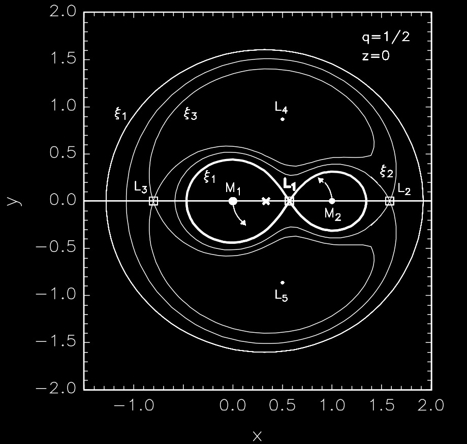
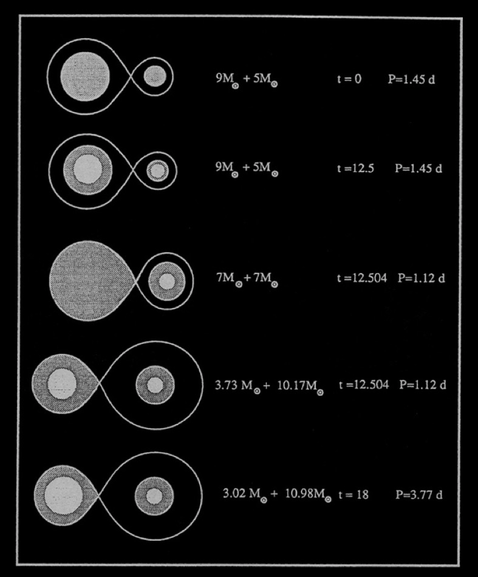
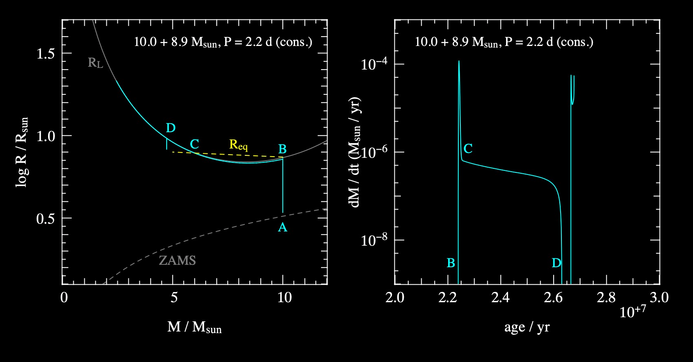
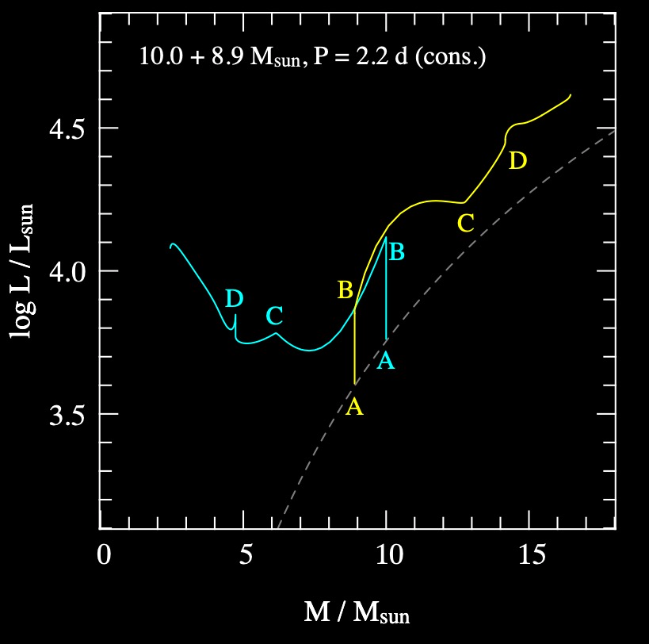
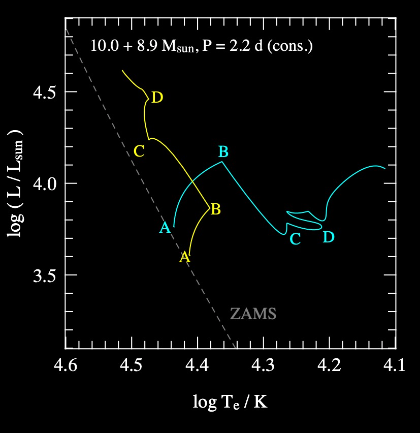

Products of Binary Evolution I#
Additional Recommended Resource: Binary Stars by Onno Pols.
Monday, Mar. 24, 2025
astrophysics of stars and planets - spring 2025 - university of arizona, steward observatory
Today’s Agenda#
Announcements - Mid-Term Corrections due Wednesday EoD (2m)
Reading Overview/Key Points (10m)
ICA 16 - Mass Transfer in Binaries - Case A (25m)
Debrief + Share Results (10m)
Reminders about Evolution in Close Binary Systems#
We define a close binary system as one containing two stars in which the evolution of either star is strongly influenced by the presence of the other.
Most stars are in binaries (or multiples) and of that, half are close binary systems.
Some Defitions:
\(a\) - semi-major axis of the system
\(q\) - mass ratio (\(M_{1}/M_{2}\)), where \(M_{1}\) is the primary (or “donor”) star.
Roche Lobe#
Region around a star in a binary system within which orbiting material is gravitationally bound to that star, shown as \(\Xi_{1}\).
{kind=link}
Mass Transfer#
When a star “exceeds its Roche lobe”, its surface extends out beyond its Roche lobe and the material which lies outside the Roche lobe can “fall off” into the other object’s Roche lobe via the first Lagrangian point. In binary evolution this is referred to as mass transfer via Roche-lobe overflow.
If mass transfer is large enough, an accretion disk will form about Star 2!
The First Mass Transfer Phase and its Consequences#
Let’s consider the scenario where the primary (donor or \(M_{1}\)) will fill it’s Roche Lobe at some point.
Three cases:
Case A - RLOF occurs during core hydrogen burning. Typically short period binaries.
Case B - RLOF occurs after hydrogen core exhaustion but before helium ignition.
Case C - RLOF occurs after helium core exhaustion.
An example of Case A mass transfer:
{kind=link}
We can define an equivalent radius of a given Roche lobe for a sphere of equivalent volume of the lobe, leading to the following dependence on the seperation and mass ratio:
Definition 116
for \(0.1 \lt q \lt 10\).
In the above example, you might expect the now more massive secondary to also undergo mass transfer once filling its Roche lobe.
Conservative Binary Evolution#
Conservation of mass, angular momentum, etc.
Let’s remind ourselves of some timescales from shortest to longest:
dynamical time scale - time scale on which a star counteracts a perturbation of its hydrostatic equilibrium. Given by the ratio of the radius of the star R and the average sound velocity of the stellar matter:
Definition 117
thermal or Kelvin-Helmholtz time scale - time scale on which a star reacts when energy loss and energy production are no longer in equilibrium. Given by the ratio of the thermal energy content of the star \(E_{th}\) and the luminosity \(L\).
Definition 118
nuclear time scale - This is the time scale on which a star uses its nuclear fuel. It is given by the product of the available fusable matter \(M_{\rm{core}}\) and the fusion energy per unit mass \(Q\), divided by the stellar luminosity.
Definition 119
Example Case A Binary System#
Only looking at the Primary#
Let’s consider a binary star system with \(M_{1}=10M_{\odot}\), \(M_{2}=8.9M_{\odot}\), and \(P=2.2 \) days.
{kind=link}
In this binary, we can observe the following:
The primary expands on the MS until filling its Roche Lobe (A to B)
From B to C, a period of rapid mass (thermal-timescale) mass transfer, with a max of \(\dot{M}_{\rm{max}}\approx -M_{1}/\tau_{\rm{KH},1}\) as the primary readjusts to reach equilibrium.
After reaching new equilibrium, mass transfer continues from C to B but now limited by \(\tau{\rm{nuc}}\) timescale.
Looking at both stars#
Now, let’s consider the Primary and Secondary on the same image and their luminosity responses:
Reminder:
some Primary is Red. .
some Secondary is Blue. .
{kind=link}
Primary increases in L until RLOF, then decreases due to mass transfer/loss. Secondary response is an increase in L due to the accretion. From B to C.
From C to D, the nuclear timescale limited takes place with stars in new equilibrium.
Net result is that the primary appears over luminous for its mass, and secondary has appropriate L and R for its new mass on the MS.
Translating to an HR diagram#
Example of the HR diagram for the binary system.
{kind=link}
In-Class Assignment 16#
In-Class Assignment 16 can be found here.